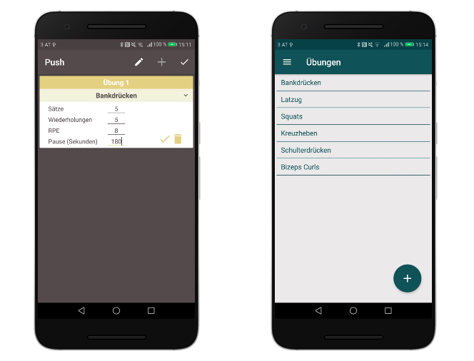
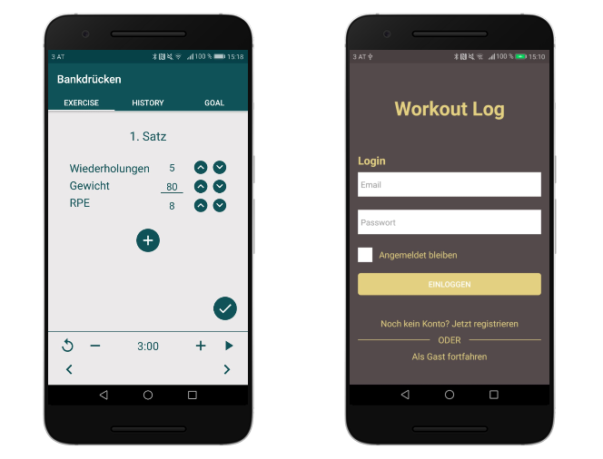

Workout Log


Description
Workout Log is a native Android application that allows users to create their own customized workouts and routines and then go through them in the gym without a lot of thinking. It makes it very easy to track every set of every exercise with details such as RPE. One can choose a plan, how many times a week to workout and on which days, and the app will do the rest.Motivation
I developed this application in order to learn and get a deeper understanding of the basic and intermediate concepts of the Android SDK. Further, I wanted to develop an application that I can publish in the playstore, to learn how this process works.What I learned
- How to use basic UI elements like RecyclerView and ViewPager
- How to create Custom Widgets
- How to use Firebase Authentication
- How to use Firebase Firestore
- How to create userfriendly interfaces concerning UI guidelines
- How to support different screen sizes and pixel densities
- How to iplement SQLite databases with Room Persistence Library